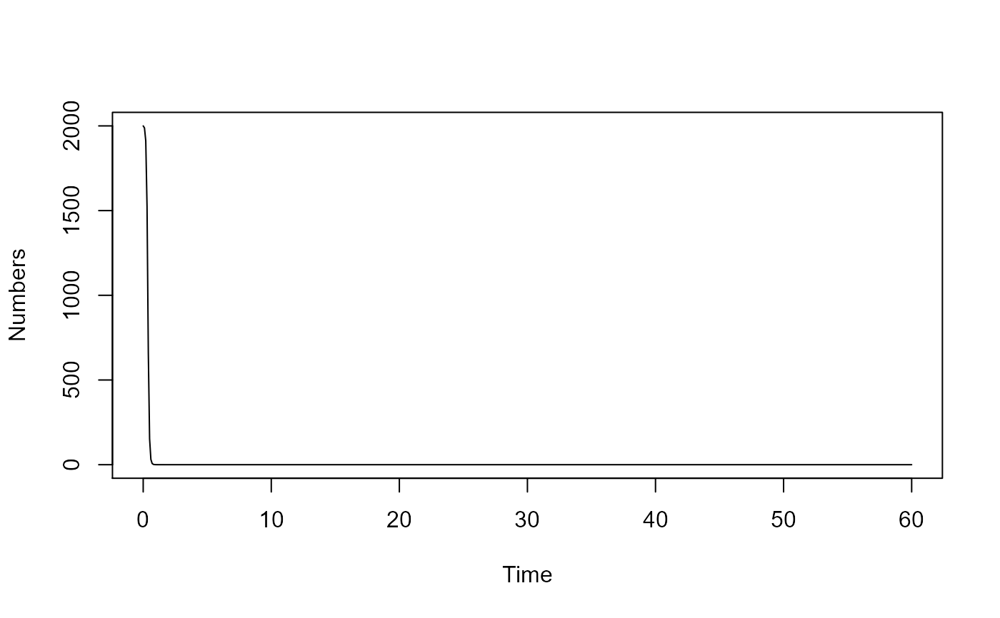

R/simulate_Host_Heterogeneity_Model_ode.R
simulate_Host_Heterogeneity_Model_ode.RdAn SIR type model stratified for two different types of hosts.
simulate_Host_Heterogeneity_Model_ode(
S1 = 1000,
I1 = 1,
R1 = 0,
S2 = 200,
I2 = 1,
R2 = 0,
b11 = 0.002,
b12 = 0,
b21 = 0,
b22 = 0.01,
g1 = 1,
g2 = 1,
w1 = 0,
w2 = 0,
tstart = 0,
tfinal = 60,
dt = 0.1
): starting value for Susceptible type 1 hosts : numeric
: starting value for Infected type 1 hosts : numeric
: starting value for Recovered type 1 hosts : numeric
: starting value for Susceptible type 2 hosts : numeric
: starting value for Infected type 2 hosts : numeric
: starting value for Recovered type 2 hosts : numeric
: rate of transmission to susceptible type 1 host from infected type 1 host : numeric
: rate of transmission to susceptible type 1 host from infected type 2 host : numeric
: rate of transmission to susceptible type 2 host from infected type 1 host : numeric
: rate of transmission to susceptible type 2 host from infected type 2 host : numeric
: the rate at which infected type 1 hosts recover : numeric
: the rate at which infected type 2 hosts recover : numeric
: the rate at which type 1 host immunity wanes : numeric
: the rate at which type 2 host immunity wanes : numeric
: Start time of simulation : numeric
: Final time of simulation : numeric
: Time step : numeric
The function returns the output as a list.
The time-series from the simulation is returned as a dataframe saved as list element ts.
The ts dataframe has one column per compartment/variable. The first column is time.
This model tracks susceptibles, infected and recovered of 2 different types. Think of those types as e.g. males/females, children/adults, etc. The model includes infection, recovery and waning immunity processes for both hosts.
This code was generated by the modelbuilder R package. The model is implemented as a set of ordinary differential equations using the deSolve package. The following R packages need to be loaded for the function to work: deSolve.
This function does not perform any error checking. So if you try to do something nonsensical (e.g. have negative values for parameters), the code will likely abort with an error message.
2020-10-05
2021-07-19
# To run the simulation with default parameters:
result <- simulate_Host_Heterogeneity_Model_ode()
# To choose values other than the standard one, specify them like this:
result <- simulate_Host_Heterogeneity_Model_ode(S1 = 2000,I1 = 2,R1 = 0,S2 = 400,I2 = 2,R2 = 0)
# You can display or further process the result, like this:
plot(result$ts[,'time'],result$ts[,'S1'],xlab='Time',ylab='Numbers',type='l')

print(paste('Max number of S1: ',max(result$ts[,'S1'])))
#> [1] "Max number of S1: 2000"